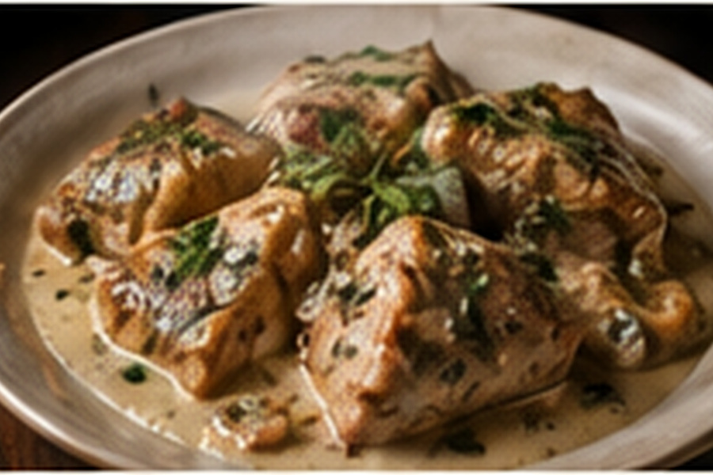

Circassian / Caucasus
Circassian Chicken
Poached chicken dressed with a rich walnut-garlic sauce.

About this dish
Circassian chicken is served cool or at room temperature, with tender shredded chicken coated in a sauce made creamy by walnuts and bread rather than dairy.
Ingredients & step-by-step method
Ingredients
- 2 lb chicken thighs or breasts
- 4 cups light stock
- 1 small onion
- 2 cups walnuts
- 2 slices day-old bread
- 2 garlic cloves
- 1 tsp paprika
- 1/2 tsp coriander
- Salt and pepper
Method
- Poach chicken and onion gently in stock 15–20 minutes until chicken reaches 165°F.
- Remove chicken, reserve broth and shred when cool enough to handle.
- Pulse walnuts, bread, garlic, paprika and coriander until finely ground.
- Add warm broth gradually while blending until the sauce is thick but spoonable.
- Fold two-thirds of the sauce through the chicken, adding broth if dry.
- Plate, spoon remaining sauce over the top and rest 20 minutes before serving.